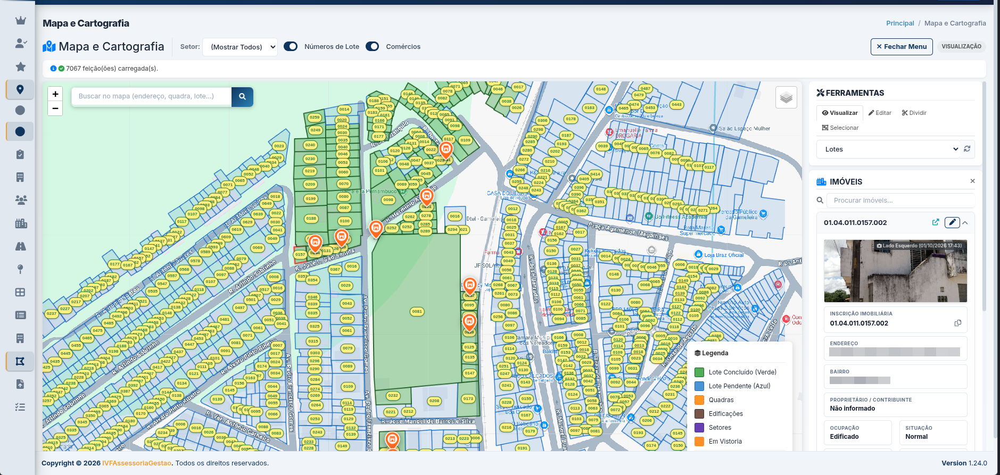
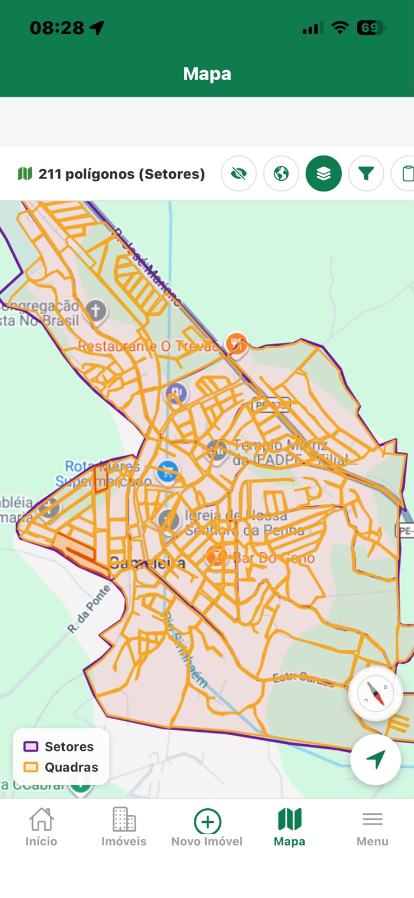
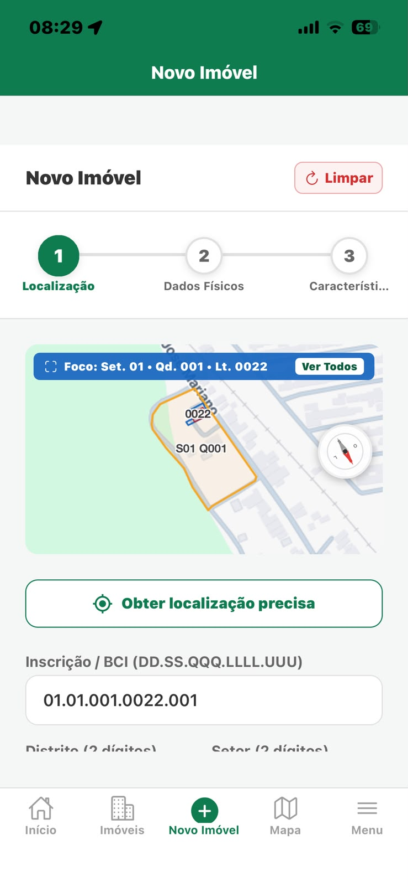
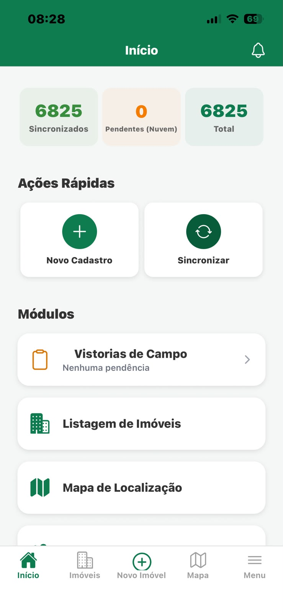
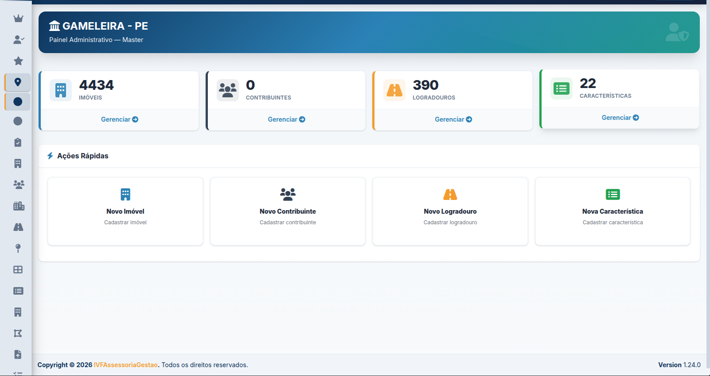
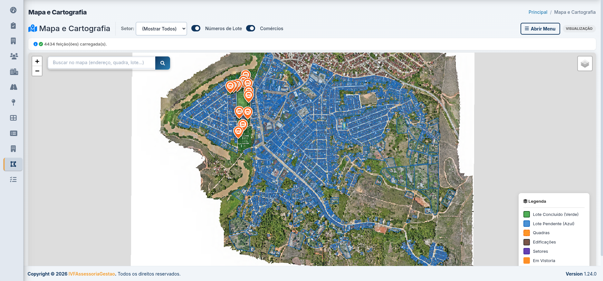
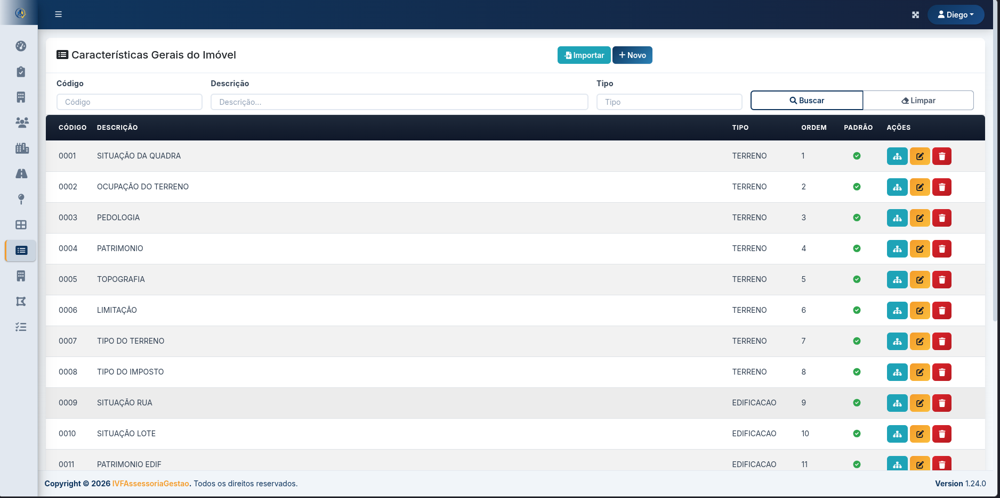

Tecnologia, geoprocessamento e vistorias em campo para um cadastro imobiliário moderno, confiável e integrado à gestão municipal.

Mapa georreferenciado do município
Vistorias em campo com aplicativo móvel
Painel de gestão e indicadores
Base de dados preparada para integração
Informações incompletas, áreas divergentes e falta de integração entre os dados comprometem o planejamento urbano e a justa tributação.
Endereços e coordenadas inconsistentes dificultam a localização do contribuinte e do imóvel.
Cadastros defasados em relação à realidade construída e às alterações de uso do solo.
Divergências de medidas do terreno e das edificações geram lançamentos incorretos de IPTU.
Imóveis não cadastrados ou subavaliados reduzem a receita própria do município.
Uma plataforma completa para recadastramento imobiliário, com geotecnologia, coleta em campo e painéis de gestão.
Visualização territorial de quadras, lotes e áreas mapeadas em imagem aérea.
Organização e validação das informações dos imóveis com características padronizadas.
Coleta de dados com geolocalização, registro fotográfico e formulários offline.
Acompanhamento do andamento e indicadores de recadastramento em tempo real.
O aplicativo móvel permite que a equipe de campo realize as vistorias, registre fotos, atualize informações e envie os dados em tempo real, mesmo em áreas sem conexão, com sincronização posterior.



Acompanhe em tempo real o andamento do recadastramento, visualize mapas interativos, gere relatórios territoriais e tenha uma visão completa do seu território.
Conheça o painel
Análise das bases existentes e das necessidades do município.
Organização cartográfica e identificação dos imóveis.
Levantamento de campo e conferência das informações.
Consolidação dos dados e integração com os sistemas previstos no projeto.
Telas reais do sistema: cartografia, cadastro técnico, painel administrativo e mapa interativo.

Visualização georreferenciada de lotes, quadras e vistorias em imagem aérea.

Organização das características e informações cadastrais dos imóveis.
Consulta de lotes, quadras e dados do imóvel diretamente no mapa.
Acesso rápido aos principais indicadores e ações da gestão.
Base cadastral atualizada e justa, sem necessidade de aumentar alíquotas ou criar novos tributos.
Informações consolidadas e georreferenciadas para apoiar processos de regularização fundiária.
Dados territoriais para direcionar investimentos em saneamento, pavimentação e equipamentos públicos.
Informações claras sobre o imóvel, com mais agilidade na regularização e no atendimento.
Conheça como a IVF pode apoiar a modernização do cadastro imobiliário do seu município.